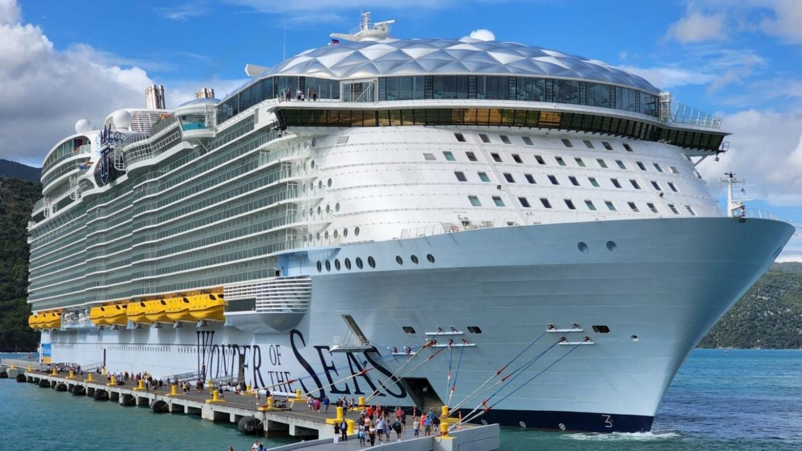

Wonder of the Seas
Длина: 362 метра
На данный момент Wonder of the Seas считается самым крупным круизным лайнером в мире. Как и Symphony of the Seas, он был построен компанией STX France для Royal Caribbean.
На 18 палубах располагаются 2687 кают, 20 ресторанов, 4 бассейна, симулятор серфинга, зиплайн высотой 10 палуб и открытый водный театр.
Wonder of the Seas вмещает максимум 6988 пассажиров и 2300 членов экипажа.